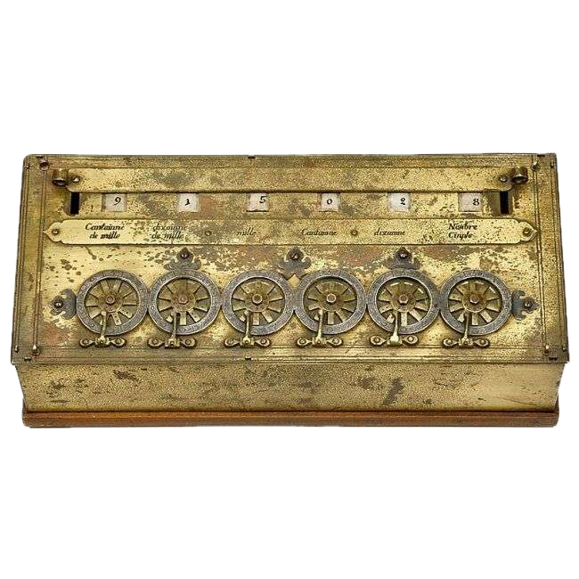

Зал 2 — Механические и электромеханические вычислители
Шестерни, перфокарты и ранняя автоматизация вычислений
Считающие часы Шиккарда
1623 г.Первое известное механическое устройство для вычислений, созданное Вильгельмом Шиккардом. Оно умело складывать и вычитать числа с автоматическим переносом разрядов — принцип, который используется в калькуляторах до сих пор.
Машина Паскаля
1642 г.
Изобретение Блеза Паскаля, созданное для помощи в расчётах его отцу-налоговику. Этот механический калькулятор стал первым устройством, которое производилось серийно и позволяло быстро выполнять сложение и вычитание.
Арифмометр Лейбница
1673 г.Готфрид Лейбниц пошёл дальше Паскаля и создал машину, способную выполнять все четыре арифметические операции. Его идея шагового барабана использовалась в вычислительной технике ещё несколько столетий.
Ткацкий станок Жаккара
1804 г.Революционный ткацкий станок, управлявшийся с помощью перфокарт. Он автоматически создавал сложные узоры на ткани и стал одним из первых примеров программируемой машины — задолго до появления компьютеров.
Разностная машина Бэббиджа
1822 г.Проект Чарльза Бэббиджа для автоматического вычисления математических таблиц без ошибок. Машина использовала метод конечных разностей и могла бы заменить труд множества людей, выполнявших расчёты вручную.
Аналитическая машина Бэббиджа
1837 г.По-настоящему революционная идея — универсальный механический компьютер. Машина должна была иметь память, процессор и управление с помощью перфокарт. Хотя она не была полностью построена, это концепция лежит в основе современных компьютеров.
Табулятор Холлерита
1890 г.Машина, которая ускорила обработку данных переписи населения США в несколько раз. Используя перфокарты, она стала важным шагом к появлению информационных технологий и будущих вычислительных систем.
Вычислительные машины Конрада Цузе
1930-е – 1940-еПервые программируемые компьютеры, созданные немецким инженером Конрадом Цузе. Его машины работали с двоичной системой и заложили фундамент современной цифровой техники.